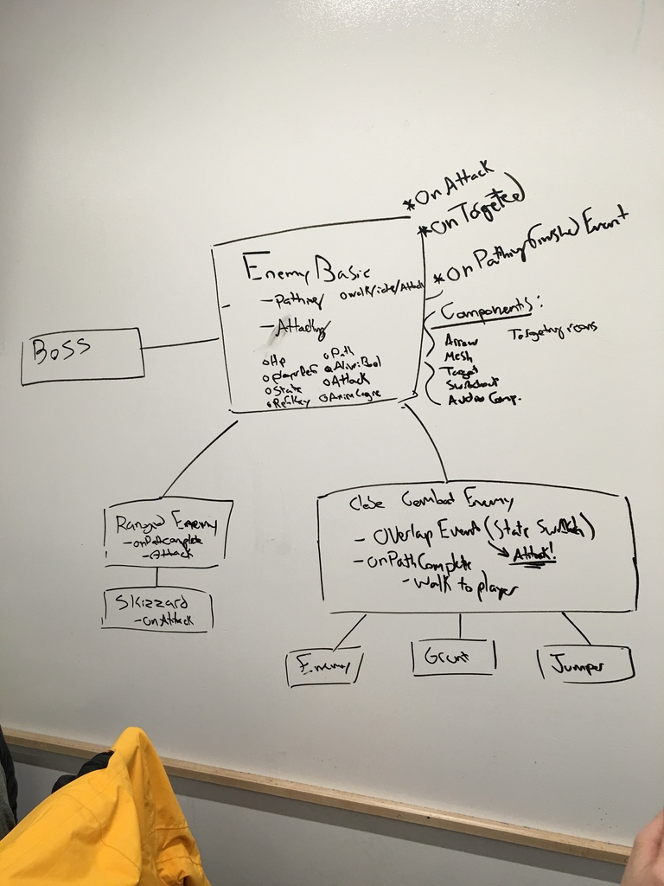

Dan Shredder - 4/29/16 - Finishing Touches and Prep for the Final Build
Tonight is the Senior Show, our night to show off the result of all of our hard work. I've missed a couple of weeks of blog posts due to the volume of work we have been doing. We've been heavily focused on bug fixing and polish for about two weeks now, trying to make sure that the final player experience was as good as it could be by our deadline. This involved lots of changes to input, minor bugs, and a lot of animations and effects tweaking. The final music and sound effects have been added in and sound fantastic. Of course as with any project there are a bunch of things we still wish we could have done before the deadline, but overall I am very pleased the result. The final build is a lot of fun to play and far exceeded my expectations. In the next few days, I plan to write a full post-mortem about what went wrong and right with the project. Overall I'm very proud and I hope everyone enjoys the game!
Dan Shredder - 4/8/16 - Some R&R, Bug Fixes, and Polish
After about 20 hours of work last week culminating in an all nighter bug-fixing session, I was exhausted at the beginning of this week. As such, I took some time to recuperate before getting back into heavy work. Once I got back into the swing of things, my focus was turned again to polish and usability. It feels like we've been talking about that a lot lately, but really that is the remainder of the work for the programming team. As we are now feature complete, our goal from this point on is to fix problems and make the game smoother to play, test, and build. We're working closely with every other team to make sure there are no problems in the way - that the art pipeline is still working, designers have what they need, and that the producers' QA feedback is addressed. More specifically this week I added some sound effects for strumming without hitting a note as well as missing notes. Next, I altered the retry system so that it restarts your current level when you die instead of always loading the Greed level. As the week closes out I will be continuing changes like this.
Dan Shredder - 4/1/16 - Continued Polish, Crunch Time, and All Nighters
Coming into this week, there were a number of usability problems with the rail, bonestorm, and wave blast jumping mechanics. I have continued to try and improve them in whatever way the team asks or I can find myself. On top of that, there were a number of bugs to fix and general improvements to responsiveness to be made. While the team held two work meetings on Saturday and Wednesday to solve these issues, there simply was too much to do to prepare for the Alpha requirements. As such, myself and a few other members did some extreme crunch time the night before the presentation, running through the game with a fine toothed comb and searching for any possible problems. We found a lot of them, but we also worked very hard making sure they were fixed properly. It was extremely tiring, but the end result was a huge improvement for Alpha. Hopefully we can carry this momentum forward through the rest of the semester and continue making great progress (Although hopefully not through all nighters anymore).
Dan Shredder - 3/25/16 - BONESTORM!!!
After meeting with the team's designers once more, we found that we would like an additional feature to expand upon the rail dashing in its new form. This new mechanic revolves around a series of "bonemerang" projectiles being spawned in the player's path that they must use the rails to avoid. This system is called the BONESTORM mechanic. My work this week has been in implementing this new bonemerang system as well as fine tuning the rail system and fixing its bugs. These two features should be among the last few to ensure that the designers have everything they need.
Dan Shredder - 3/11/16 - Plan Restructuring, Utilities and Polish
We kicked this week off with a team meeting to restructure our priorities and figure out how we planned on moving forward with Dan Shredder. From there Matt gave me a list of the utilities and features that are the next priority for developing the boss further. These included a specialized "Amp" enemy, a path node for allowing the player to pause, direct camera control for the designers, and the ability for each enemy to have unique music riffs. Everything but the camera control was completed this week by myself or other programmers, as well as a next iteration on the rail system. In its previous form, the player simply dashed temporarily to either side and then back. The designers decided they instead want to permanently be able to hop between 5 set rails at will, which the system has now been adapted to do. I also improved the jumping with some gravity and the ability to only jump when on the ground. Next step is to continue polishing and working on utilities to make the designer's lives easier.
Dan Shredder - 3/4/16 - More Boss Gameplay Programming
This week marked the completion of the basic boss mechanics. The rail dashing is in and working, allowing the player to dash left, right, or up for a jump, as long as they have passed a trigger to place them in "dash mode". As we move forward I will be refining this mechanic further to have multiple specific rails to allow the player to weave their way through obstacles so that the designers can use this mechanic throughout the game. My next step is to meet with Matt again and work closely with him on the remaining issues to be solved for the boss fight and make sure the designers have all of the tools they need for further development.
Dan Shredder - 2/26/16 - Boss Mechanics Continued
My focus for this week has been squarely on implementing and iterating on the new game mechanics for the boss fight. First on my list was completing the custom notes system. The groundwork I laid last week made getting the notes to work a lot simpler, and after a few hours, I was able to see some brand new note playing functionality! Right now the Greed notes and Angel notes exist, and are spawned whenever a note with a specific "Velocity" value is created. I also began constructing the Satan enemy himself, including his "blast wave" functionality which spawns an object that expands towards the player and must be jumped over to avoid damage. Finally, I began working on the rail dashing / jumping system to allow the player to perform these dodging actions. Currently the system needs a lot more work, but I am on the right track to have the majority of the boss systems done very soon.
Dan Shredder - 2/19/16 - New Mechanics Have Arrived!
After shifting my focus from backend refactoring to gameplay mechanics this week, I have made some great progress towards expanding the gameplay. The designers provided their priority list for the new features to implement, and I hit the ground running. First up was the "Grudge Bar" which is a sort of tug-of-war mechanic for the boss fight. Dan Shredder and Satan will have their rock off, trading guitar and bass solos respectively, and as you play notes you struggle over who controls the power of the "Grudge Bar". Pushing the bar all the way in either direciton will have one of the two fighters win the rock off. This is now in the Greed level for testing and is functional, with a constant drain from Satan and an increase for the player for each note they hit. I also began creating the framework for implementing custom note types that will vary based on level. For example the Greed level will have Greed notes, that incentivize the player to be greedy, granting more points but costing you progress towards defeating your enemy. These notes have their structures in place, but still need to be linked up to the riff system so that we can start spawning some new note types. Next week will be finishing up the note system and moving on to helping Satan manifest in the (digital) flesh.
Dan Shredder - 2/12/16 - Enemy Testing and UI Overhaul
This week saw the (almost) completion of the reworked C++ enemies. I finished filling out their functionality and created a Blueprint class inheriting from MeleeEnemy to test them out. After bug fixing and fiddling with settings for a night or two, I finally got our enemy acting just as expected. All that they still require is pathfinding code, which rely on Kyle's system that he is in the process of writing. There may be some other tweaks to make after that, but they will be minor. After finishing with that, I focused on helping the designers and artists spice up the look of the game for our upcoming presentation on Monday. This mostly comprised of implementing new assets and style for the UI and fretboard stuff. We are finally using a more "metal" font now, as well as some really kickass looking assets for our notes and fretboard. On top of that, Justin did an overhaul of the level and added an extra layer of polish and shine to everything. Finally, I sat down with Matt from the design team and discussed the Boss fight in more detail, settling on the first feature to begin implementing, the Grudge bar. This bar will effectively act like a rock-based tug of war between Dan Shredder and the Devil as they struggle to best each other. Should be awesome!
Dan Shredder - 2/5/16 - Refactoring!
With our plan for the first few weeks set, this week was the time to start getting into the meat of the game's systems. Since our first order of business was transfer code over from blueprints to native C++, I spent much of my time this week implementing the Enemy class hierarchy. Using the designs we discussed last week, I built upon the Enemy base class and inherited from it in the MeleeEnemy and RangedEnemy. The goal with these new enemy classes is to create a C++ class with the backbone of Enemy functionality that can then be extended by a Blueprint. This will mean that a designer can simply create a subclass of MeleeEnemy or RangedEnemy and then override the various functions such as Attack() or Path() to behave however they want. Meanwhile, other members of the programming team are working on doing similar refactoring work in other areas of the game. The current plan is to be finished with the rework in time for QA testing on Monday February 8th. After that point my job will be to work directly with the designers as a gameplay programmer, with the first item on the agenda being an awesome boss fight!
Dan Shredder - 1/29/16 - Diving Right In
This marks the first week of work for the second semester of Dan Shredder. The team has met a few times, made our plans and its time to finally get started with the code. I met with the other programmers and we started structuring the new architecture for the enemy classes. Kyle, our Lead Programmer, decided early on that our first priority should be transferring existing systems from blueprints to C++ code in order to improve framerates and efficiency. First on the list for this conversion were the enemies, as they currently have some of the most bloated blueprints. Here is our crude diagram of the new class structure:
As such, I began creating an "Enemy" base class in C++ that we can adapt all of the games enemies as subclasses of. Hopefully this will mean that the game runs better and is much easier on the programmers and the designers in terms of future development.